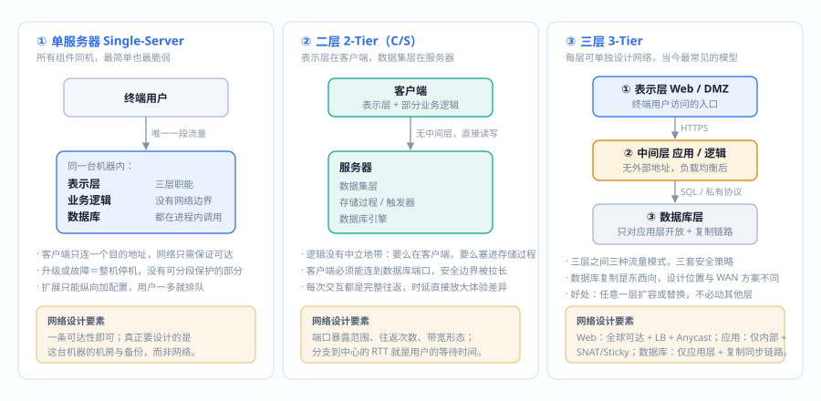
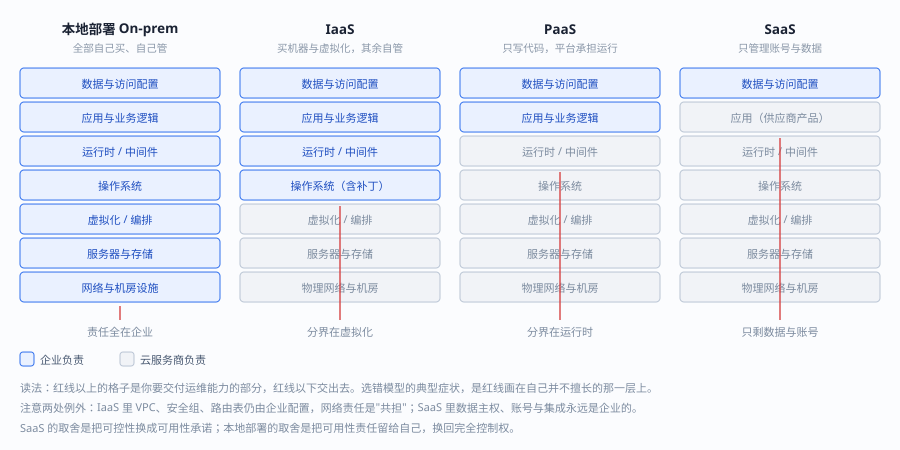
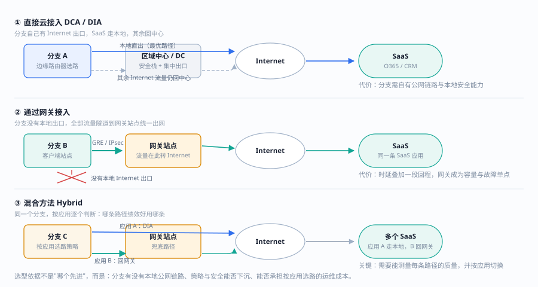
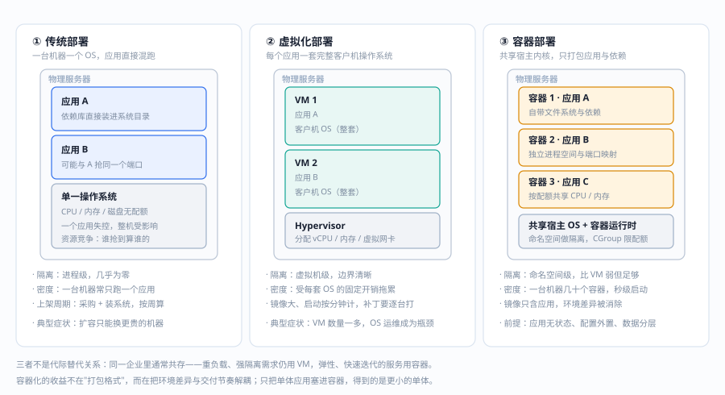
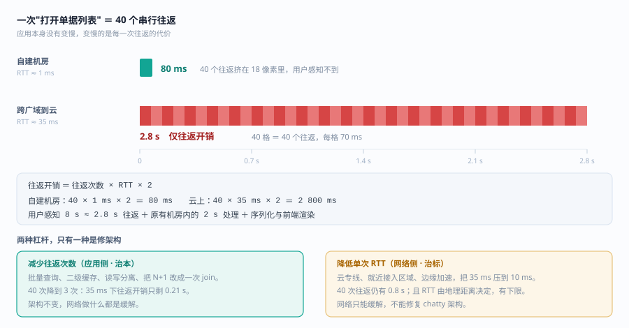

第 3 章：网络的目的是什么？ (What's the Purpose of the Network?)
《CCDE 400-007 Official Cert Guide》中文翻译 | 原书第 181-208 页
本章涵盖主题
- 业务应用：业务应用及相关的网络设计要素
- 服务模型：不同服务模型及其网络设计特征
- 云：各种形式的云及相关网络设计要素
- 数据管理：数据管理方法论
本章导读：网络的上限由应用决定
第 1 章说"从业务推导网络"，这一章把"业务"具体化成一个可分析的对象：应用和数据。因为最终跑在网络上的是应用，网络的所有指标（时延、丢包、带宽、可用性）只有在某个应用身上才有意义。
八个容易踩空的认知：
1. 应用架构是网络设计的输入，不是输出。 单体应用、两层、三层、N 层、微服务——它们决定流量是"南北向为主"还是"东西向为主"，决定一次用户操作要经过几跳、能容忍多少时延。先改网络去适配应用，从来比反过来便宜。
2. 时延预算要按"一次业务事务"算，不是按"一跳"算。 用户点一次提交，可能经过 30 次服务调用；每次多 5ms，用户就多等 150ms。三层模型里每个跨层调用都是预算的消耗点。
3. 应用模型越"现代"，网络越难做。 单体应用只需要"通"；微服务需要服务发现、东西向策略、分布式追踪、更细的故障隔离。架构演进不是免费的，成本会从服务器转移到网络和可观测性上。
4. 服务模型（IaaS/PaaS/SaaS）决定你还剩下多少控制权。 选 SaaS 等于把可用性、性能、安全的一部分责任交给供应商，你的设计重点从"建"变成"选 + 集成 + 兜底"。别用 IaaS 的思路去设计 SaaS 的保障。
5. 上云不是"把服务器搬到别处"，是"改变故障域的形状"。 云上不再有"我的机房"这个边界，取而代之的是区域、可用区、云服务共享责任模型。原来的单点消失了，但新的共享故障（云区域级故障、单点登录、DNS）出现了。
6. 云连接模型的选择核心是"确定性"，不是"带宽"。 Internet、VPN、专线、云交换的差别，主要在于时延与丢包是否可预期、SLA 由谁承担。要求确定性的业务，不能靠"带宽够大"来满足。
7. Cloud-agnostic 是有代价的。 不绑定云厂商，意味着放弃该云的托管服务、原生网络与安全能力，转而自己实现一层抽象——换来的是可迁移性，付出的是运维复杂度和性能折损。这是一个明确的取舍，不是"更高级的做法"。
8. 数据管理决定合规与备份设计，而它常常不在网络团队的视野里。 数据分级、驻留、留存、加密、备份、销毁——这 11 个支柱里至少有一半会直接变成网络要求（走哪条路径、能不能出境、谁能访问）。
一句话概括这一章：先看清"跑的是什么应用、数据放在哪、服务由谁提供"，再谈网络怎么连——顺序反了，设计就只能靠猜。
基础内容 (Foundation Topics)
网络的目的是什么？为什么需要网络？这些问题应始终在网络设计师脑海中，因为理解网络的目的和目标对正确设计至关重要。
从技术角度回答：网络的目的是在正确的时间内将数据从 A 点传输到 B 点。但从网络设计角度，我们需要更进一步——网络传输数据的根本目的是实现业务成果和目标，让业务成功！
企业对网络的依赖已经到了必须将网络及其相关服务的可用性设计到极高水平的地步。就像传统电话网络 (POTS) 一样——人们如此依赖它，以至于整体可用性必须设计到极高水平。
业务应用 (Business Applications)
网络是当今业务应用的"信息高速公路"。为了让业务成功，这些应用必须能在用户、设备、数据、数据库和其他应用组件之间按需正确通信。
应用模型 (Application Models)
网络设计师需要了解应用的构建方式，以便正确设计支持该应用的网络。
1. 单服务器模型 (Single-Server Model)
最简单的应用模型，相当于在个人计算机上运行应用。应用运行所需的所有组件都在单个应用或服务器上。
2. 二层模型 (2-Tier Model)
类似客户端/服务器架构。表示层（用户界面层）运行在客户端，数据集层在服务器端执行和存储。客户端和服务器之间没有中间层（应用层）。
3. 三层模型 (3-Tier Model)
目前最常见的应用模型，包含三层：
| 层级 | 名称 | 功能 |
|---|---|---|
| 表示层 (Presentation) | Web 层 / GUI 层 | 前端，最终用户访问和交互的界面。将任务和结果翻译为用户可理解的形式 |
| 中间层 (Intermediate) | 应用层 / 逻辑层 | 应用的功能和逻辑处理层。处理任务、函数和命令，做出决策和评估，执行计算。在表示层和数据库层之间移动数据 |
| 数据库层 (Database) | 数据层 | 存储和检索信息，传回中间层，最终返回给最终用户 |
💡 将应用拆分为不同层级（n 层架构）使网络设计师可以为每层单独设计网络。每层可能需要自己的负载均衡、源 NAT、DNS、源路由和流量工程设计。
三层模型的网络设计要素
| 层级 | 流量模式 | 网络设计要素 | 需要考虑的问题 |
|---|---|---|---|
| Web 层 | 最终用户 ↔ Web 层 | 无数据库层访问。通常位于 DMZ | 最终用户如何全球访问 Web 层？Web 层特定网络/IP 如何路由？Web 层高可用架构如何？(Active/Active, Active/Standby, Anycast 等) |
| 应用层 | Web 层 ↔ 应用层 | 仅内部访问，无外部地址或路由。实施负载均衡。通常位于内部多层安全之后 | Web 层如何与应用层通信？数据库层如何与应用层通信？(SNAT, NAT, Sticky 等) |
| 数据库层 | 应用层 ↔ 数据库层 | 仅内部访问。通常位于内部多层安全之后 | 不同数据库成员服务器之间如何复制？数据库变更如何同步？(多数据中心场景尤为重要) |

应用约束和需求
网络设计师需要了解的常见应用约束和需求：
| 约束/需求 | 说明 |
|---|---|
| 组播 (Multicast) | 通常用于服务器集群间保持数据同步（如后端数据库复制），或作为数据流应用的传输机制（如 IPTV 和实时股市更新）。不支持组播会破坏应用 |
| 二层扩展 (Layer 2 Extension) | 最常见的网络设计需求之一。应用服务器不在其二层段外通信。网络设计师需要提供二层扩展选项——这导致大型二层故障域的糟糕网络设计，但确实解决了应用需求 |
| 硬编码项 (Hardcoded Items) | 代码中硬编码的 IP 地址、主机名等。需要通过 NAT、流量工程和源路由来缓解 |
| 高可用性 (High Availability) | 应用如何设计高可用直接影响网络。多地点？数据如何同步？Active/Standby 还是 Active/Active？负载均衡方式？是否需要 SNAT？ |
⚠️ 网络设计师应注意：很多网络设计问题源于应用开发不当。例如被迫提供二层扩展作为"创可贴"方案——本应是短期方案却变成了永久方案。网络设计师和安全专家应参与应用构建和审查过程。
服务模型 (Service Models)
服务模型决定了应用的位置以及应用的哪些元素由企业拥有和管理。
四种主要服务模型
1. 本地部署 (On-premises)
企业拥有和管理应用。企业采购运行服务所需的所有基础设施，然后完全管理、维护和运营。
特点： - 完全控制所有组件 - 本地可用 - 托管在企业服务器环境中
适用场景：需要完全控制应用所有组件时，常见于安全合规和数据分类要求
2. 软件即服务 (SaaS)
供应商通过 Internet 向用户提供软件，通常按月或年订阅。
特点： - 无需在任何计算机上安装和运行软件 - 一切通过 Internet 访问 - 可从任何设备、任何时间、有 Internet 连接的地方访问 - 可扩展，按需提供服务
适用场景：希望应用确保可用性但不想维护应用时
3. 平台即服务 (PaaS)
供应商提供硬件和软件工具，用户使用这些工具开发应用。PaaS 用户通常是应用开发者。
特点： - 主要供开发者创建软件和应用 - 可扩展 - 基于虚拟化技术构建 - 无需从头开始即可创建应用 - 易于运行，无需深入 IT 知识
适用场景：希望创建独特应用但不想花费大量资金或承担全部责任时
4. 基础设施即服务 (IaaS)
按需付费的存储、网络和虚拟化服务模型——满足企业所有基础设施需求。
特点： - 高度灵活 - 高度可扩展 - 多用户可访问 - 成本效益高 - 企业保持对基础设施的控制
适用场景：需要完全控制虚拟基础设施但希望按需付费时
服务模型对比
| 模型 | 特点 | 优势 | 适用场景 |
|---|---|---|---|
| 本地部署 | 企业拥有和管理 | 完全控制所有组件 | 需要完全控制（安全合规、数据分类） |
| SaaS | 通过 Internet 可用 | 无需安装，一切可用 | 希望应用确保可用但不想维护 |
| PaaS | 多用户可访问 | 开发者无需从零开始 | 想创建独特应用但不想承担全部责任 |
| IaaS | 高度灵活可扩展 | 按需付费，保持控制 | 需要完全控制基础设施但希望按需付费 |

云 (The Cloud)
当企业开始利用任何形式的云时，网络设计师应考虑三个用例：
- 安全地将私有网络扩展到单个或多个公有云环境：包括多云、多区域、多 VPC 连接；VPN；扩展数据中心到云；启用分支到云的直接连接
- 优化数据中心和分支到云 IaaS 和 SaaS 的连接性能：包括最佳路径选择、云分段、监控、流量整形/QoS
- 保护从分支到 Internet 和 SaaS 的访问：使用直接互联网接入 (DIA) 安全地连接分支用户到多云环境
云连接模型
1. 直接云接入 (Direct Cloud Access, DCA)
允许远程站点直接从 Internet 访问 SaaS 应用，通过专用私有连接。
- 云仅允许指定应用流量使用直接连接的 Internet 传输
- 其他 Internet 流量走通常路径（通过区域中心、数据中心或 CNF）
- 边缘路由器选择最优 Internet 路径访问 SaaS 应用
- 不同应用可以走不同路径（按应用选择路径）
- 如果路径不可达或性能不达标，移除该路径候选
- 通常称为直接互联网接入 (DIA)
2. 通过网关的云接入 (Cloud Access Through Gateway)
许多企业不在分支使用 DIA（因为仅通过私有提供商连接，或集中策略/安全要求不允许）。
- SaaS 流量通过隧道发送到最佳性能的网关站点
- 在网关站点路由到 Internet 访问 SaaS 应用
- 使用网关站点的远程站点称为客户端站点 (Client Sites)
- 不同远程站点和应用可使用不同网关站点和路径
3. 混合方法 (Hybrid Approach)
DIA 和客户端/网关站点的组合。SaaS 应用可以使用 DIA 出口或网关站点，取决于哪条路径提供最佳性能。

云类型
| 云类型 | 定义 | 特点 |
|---|---|---|
| 私有云 (Private Cloud) | 云计算资源由一个企业专用。可在企业数据中心内或由 CSP 托管 | 资源在私有网络上维护，所有设备专用于该企业 |
| 公有云 (Public Cloud) | 最常见的云计算类型。资源由 CSP 拥有和运营 | 与其他企业共享硬件、存储、虚拟化和网络设备 |
| 混合云 (Hybrid Cloud) | 同时使用私有云和公有云 | 获得两种云环境的优势同时限制其负面影响 |
| 多云 (Multi-cloud) | 使用两个或更多 CSP | 可在不同云环境间实时移动工作负载 |
云类型详细对比
| 云类型 | 控制权 | 维护 | 灵活性 | 可扩展性 | 迁移 | 成本 |
|---|---|---|---|---|---|---|
| 私有云 | 最多控制 | 高 | 最低灵活性 | 高可扩展性 | 难迁移 | 高成本 |
| 公有云 | 最少控制 | 无 | 灵活 | 高可扩展性 | 难迁移 | 最低成本 |
| 混合云 | 两者混合 | 中等 | 灵活 | 最低可扩展性 | 易迁移 | 高成本 |
| 多云 | 最少控制 | 每个 CSP 维护高 | 跨 CSP 最高灵活性 | 最高可扩展性 | 最难迁移 | 最高成本 |
云无关架构 (Cloud-Agnostic Architecture)
云无关架构不使用厂商特定的专有功能。专注于在不同云提供商之间利用相同的云能力。
三大核心关注点
| 关注点 | 定义 | 价值 |
|---|---|---|
| 可移植性 (Portability) | 在不同 CSP 之间移动应用和服务的能力 | 通过适当的抽象层实现跨 CSP 移动 |
| 抽象 (Abstraction) | 使用抽象层与底层云特定平台功能解耦 | 直接降低成本，增加灵活性 |
| 互操作性 (Interoperability) | 开发不被绑定到特定云功能集的应用和服务 | 允许利用不同云平台而无需重大重新开发 |
实现云无关的实践
-
解耦 (Decoupling)： - 应用与底层云平台解耦（通过面向服务架构 SOA） - 云组件与使用它们的应用解耦
-
容器化 (Containerization)： - 所有应用应遵循容器化架构 - 容器帮助将应用与云特定环境解耦 - 确保在不同云厂商之间迁移应用相对容易
-
云无关 vs 专有云服务： - 需要区分云无关服务和云专有服务如何与应用交互 - 规划应用迁移到 CSP 的方式
面向服务架构 (SOA)
SOA 是确保云无关架构成功的关键软件设计风格。
SOA 的核心：服务通过网络通信协议提供给应用组件的其他部分。底层原则是厂商和技术无关的。
服务间通信方式： 1. 在不同服务之间传递数据 2. 在两个或多个服务之间协调活动事件
SOA 的好处： - 代码可复用，减少开发时间 - 支持多种编码语言（使用中央接口） - 创建标准通信流程 - 更高的可扩展性，限制客户端-服务器交互
云容器化架构
从传统部署到容器化云部署的演进：

| 部署方式 | 特点 |
|---|---|
| 传统部署 | 应用在物理服务器上运行。无法正确限制资源或设置控制。通常每台服务器专用于单个应用 |
| 虚拟化部署 | 多个 VM 在单台物理服务器上。每个 VM 独立隔离，有自己的资源和安全控制。每个 VM 运行所有组件（应用 + 操作系统） |
| 容器部署 | 类似 VM 但隔离控制不那么严格，允许共享操作系统。轻量级。有自己的文件系统、共享 CPU 时间、内存、进程空间。可在不同基础设施间移动 |
容器的好处： - 敏捷的应用创建和部署 (CI/CD) - 开发和运维任务职责分离 - 实时应用级健康分析 - 跨所有环境的一致性 - 实时分发到其他操作系统和位置 - 提高应用性能的可预测性 - 提高资源效率
云应用策略
企业准备将应用迁移到云时，建议纳入应用评估流程。创建应用评估团队：
| 角色 | 职责 |
|---|---|
| 业务线负责人 | 应用的业务利益相关者。理解应用的业务角色和影响 |
| 安全专家/合规审计员 | 负责安全控制、合规法规和代码审计 |
| 应用负责人/开发者 | 软件工程成员，负责创建和修改代码 |
| 网络工程师/设计师/架构师 | 提供网络资源以正确服务应用 |
数据管理 (Data Management)
数据是所有其他资源将利用的最关键资源。必须有效、准确、安全地管理所有数据，使其他资源能够正确利用数据，确保完整性、可用性和机密性。
数据管理为数据分析奠定基础。没有良好的数据管理，就没有数据分析。
数据管理的 11 大支柱
| 支柱 | 定义 |
|---|---|
| 1. 数据治理 (Data Governance) | 规划数据管理的所有方面，包括可用性、可用性、一致性、完整性和安全性 |
| 2. 数据架构 (Data Architecture) | 企业数据的整体结构及其如何融入企业架构 |
| 3. 数据建模和设计 (Data Modeling and Design) | 数据分析及相应的分析系统，包括设计、构建、测试和持续维护 |
| 4. 数据存储和运营 (Data Storage and Operations) | 用于存储和管理数据的物理硬件 |
| 5. 数据安全 (Data Security) | 确保数据受保护且仅被授权用户访问的所有安全要求、控制 and 组件 |
| 6. 数据集成和互操作性 (Data Integration and Interoperability) | 将数据转换为结构化形式以供其他系统和资源利用 |
| 7. 文档和内容 (Documents and Content) | 所有形式的非结构化数据及其可访问性工作 |
| 8. 参考和主数据 (Reference and Master Data) | 以允许冗余的方式管理数据，错误可通过标准值归一化 |
| 9. 数据仓库和商业智能 (Data Warehousing and Business Intelligence) | 管理和应用数据用于分析和业务决策 |
| 10. 元数据 (Metadata) | 创建、收集、组织和管理元数据（引用其他数据的数据） |
| 11. 数据质量 (Data Quality) | 数据监控实践，确保交付的数据完整性得到维护 |
⚠️ 真正的数据管理模型需要包含所有 11 个支柱。缺少任何一个，就有数据管理领域未被覆盖。例如，没有元数据管理，企业失去轻松分类数据的能力；没有数据质量保证，所有数据都处于风险中，分析变得无用。
实战案例
案例一：带宽翻倍，视频会议还是卡
背景：某公司视频会议频繁卡顿，IT 把带宽从 100M 升到 300M，问题依旧。
按应用特征拆开看：
| 应用特征 | 视频会议 | 文件共享 |
|---|---|---|
| 协议 | UDP/RTP | TCP |
| 对丢包 | 极敏感（1% 丢包画面即花屏） | 不敏感（重传即可） |
| 对抖动 | 极敏感 | 不敏感 |
| 对带宽 | 中等（每路 2–4M） | 高 |
真正的三个原因：
- 视频流量与备份任务共用同一条队列，备份把队列打满
- 分支到总部单跳延迟 45ms，抖动 30ms，超出终端自适应范围
- 部分分支出口是非对称带宽（下行 300M、上行 20M），而会议是双向对称流量
修正：为实时流量单独队列 + 分支上行扩容 + 开启抖动缓冲。总带宽没增，体验反而好了。
💡 教训：先问"这个应用在意什么"，再问"网络给不给得起"。 带宽只是其中一个维度，丢包、抖动、时延、对称性同样关键。
案例二：上云之后，系统反而更慢了
背景：某企业把 ERP 迁移到公有云，云上资源更充足，但用户投诉"打开单据列表要 8 秒"（原来自建机房 2 秒）。
排查过程：
| 层面 | 现象 |
|---|---|
| 云主机性能 | CPU/内存/磁盘均有余量，不是资源问题 |
| 网络时延 | 办公区到云：RTT 从 1ms 变成 35ms |
| 应用行为 | 单据列表页串行发起 40 次数据库查询（N+1 查询），每次一个往返 |
| 计算 | 40 × 35ms × 2 ≈ 2.8 秒只是往返开销，叠加原有逻辑即 8 秒 |

根因：应用架构是chatty（大量小往返）型，在局域网低时延下看不出来，跨广域网后时延被放大 40 倍。
修正方向：应用侧改为批量查询/缓存；网络侧用云专线把 RTT 压到 10ms 以内；数据库读写分离减少跨区域访问。
💡 教训：上云不是搬机器，是搬"距离"。 第 3 章强调的应用架构特征（chatty vs bulk、状态是否外置）直接决定云化后的性能表现，网络只能缓解、不能修复架构问题。
设计缺陷
| 缺陷 | 表现 | 后果 | 正确做法 |
|---|---|---|---|
| 按应用名字而不是应用行为做设计 | "视频会议需要带宽"→ 只扩带宽 | 扩了带宽依然花屏（丢包/抖动/非对称才是主因） | 用特征矩阵描述应用：协议、丢包敏感度、抖动敏感度、时延上限、流量对称性、是否有状态 |
| 把上云当搬家 | 云上资源更足，却忽略了 RTT 从 1ms 变 35ms | chatty 应用性能崩塌（案例二） | 先评估应用架构（chatty vs bulk、状态外置、缓存策略），再决定云连接方式 |
| 过度追求云无关 | 为了"能随时迁走"，放弃云原生 PaaS 能力，全部自建在 IaaS 上 | 可移植性拿到了，运维负担与成本翻倍 | 云无关只应用于真正需要跨云的那一层（数据与身份），计算/网络层按场景选最优 |
| 服务模型选错层次 | 该用 SaaS 的用了 IaaS 自建，该用 IaaS 的买了 SaaS | 承担了不该承担的运维责任，或被供应商锁定 | 按"谁最擅长这件事"选模型：非差异化能力外购，差异化能力自建 |
| 只做存储与备份就称数据管理 | 11 个支柱只覆盖 1–2 个 | 数据可用但不可信、不可查、不可合规 | 11 支柱逐条对照，缺哪条补哪条，优先补元数据与数据质量 |
| 容器化只改部署方式 | 单体应用直接塞进容器，仍共享同一数据库 | 弹性与故障隔离的收益全部拿不到 | 容器化的前提是无状态化 + 配置外置 + 数据分层，否则只是换了包格式 |
实战经验总结
| 经验 | 说明 |
|---|---|
| 先给应用建"特征档案" | 每类应用一行：时延上限、丢包容忍、抖动容忍、带宽形态、流向（南北/东西）、是否有状态。这张表是后面 QoS、云连接、WAN 选型的共同输入 |
| 网络只能缓解，架构才能修复 | chatty 应用跨广域网的性能问题，靠加带宽解决不了，必须改批量查询、缓存或读写分离 |
| 流向决定架构 | 南北向（用户到服务器）看出口与边缘，东西向（服务器之间）看数据中心 fabric 与分段，两者设计完全不同 |
| 时延是地理决定的 | 光速决定了 RTT 下限，任何"优化"都只是把 RTT 从 200ms 压到 60ms。跨洲双活必须按业务切分，不能强求全网低延迟 |
| 上云前先算"距离账" | 云区域的物理位置、可用区之间的距离、跨区流量费用，三项在方案阶段就要算进 TCO |
| 可移植性是有成本的 | 每增加一个抽象层都会损失一部分云原生能力，只在该买的地方买 |
| 数据管理 11 支柱当检查表用 | 不用背全，但评审时逐条问"这条谁负责"，能问出被忽略的领域 |
设计情景演练（2 个）
情景一：把 12 年前的 ERP 搬上云
场景：某制造企业的核心 ERP 是 2012 年上线的三层架构：Web 层 4 台、应用层 8 台、数据库 2 台（主备），全部在自建机房。数据库用了共享存储和私有协议心跳，应用层与数据库之间有大量小事务（日均 2400 万次，单次往返平均 3ms，机房内 RTT 0.2ms）。集团要求 18 个月内完成上云，预算只覆盖 IaaS 托管。
要回答的问题： 1. 这个应用适合直接"平移"到公有云 IaaS 吗？瓶颈会在哪？ 2. 连接模型怎么选？ 3. 如果不改应用，网络能补到什么程度、补不到什么程度？
参考思路： - 先算时延预算，再谈搬家。 2400 万次/天 ≈ 278 次/秒，单次往返 0.2ms → 若 RTT 升到 2ms，单事务耗时增加约 1.8ms；在并发受限的场景下，这会直接压低吞吐。这类"高频小事务 + 紧耦合应用层/数据库"的组合，是上云最典型的硬骨头。 - 结论通常是"分层上云"而不是整体平移：Web 层（无状态、用户侧时延敏感但对后端 RTT 不敏感）优先上云；应用层与数据库必须在同一低时延域内（同园区、同可用区、或专线直连且实测 RTT 达标）。 - 连接模型选择看确定性：若应用层与数据库跨"云—机房"，Internet VPN 的抖动不可接受，应选专线/云交换，并要求 SLA 中的时延与丢包指标，而不是只看带宽（10Gbps + 3% 丢包的小事务性能，可能远不如 1Gbps + 0.05% 丢包）。 - 网络补得到的：路径优化、QoS 保障、TCP 参数调优、连接复用（应用侧）、就近接入。 - 网络补不到的：应用层与数据库之间每次调用的 N+1 查询问题、缺少缓存导致的重复往返、事务拆分不合理。这些只能改应用。 - 正确产出：一张"按层拆解的上云可行性表"（每层标注时延敏感度、状态性、迁移风险、目标位置）+ 明确的"需要应用侧配合的清单"。不要承诺网络能解决应用的问题。
情景二：微服务化之后"网络变慢了"
场景：某互联网公司把单体拆成 120 个微服务，跑在双云（A 云为主、B 云做灾备）+ 自建机房混合环境。上线后出现三类问题：跨云调用 P99 时延从 40ms 涨到 260ms；故障定位平均耗时从 20 分钟涨到 3 小时；安全团队无法说清"服务 A 能否访问服务 B"。
要回答的问题： 1. 这三个现象的共同根因是什么？ 2. 网络设计要补哪些能力？ 3. "双云 + 机房"的架构是否应该调整？
参考思路： - 共同根因：东西向流量失控。 单体时代是"南北向为主、路径固定"；微服务时代是"东西向为主、调用关系动态"。原来的网络设计（以边界为中心、以 IP 为标识、以静态 ACL 为策略）在新形态下全部失效。 - 时延：跨云调用 260ms 中有很大一部分不是链路，而是多次串行调用 + 缺少就近路由 + 无连接池。第一步不是扩带宽，而是把调用链压平（同域优先、就近路由、缓存），再评估跨云调用是否必要。 - 可观测性：需要分布式追踪、服务级指标、网络流日志三者的关联。只有网络设备日志，永远定位不到"哪个服务慢"。 - 安全策略：从"IP + 端口"转向"身份 + 服务"（服务网格 mTLS、基于工作负载身份的策略），否则 120 个服务的访问矩阵无法人工维护。 - 双云架构的取舍：双云"同时活跃"会带来跨云数据一致性与时延问题，通常应设计为"同域内闭环、跨域只做必要同步"，即每个云区域内自成调用闭环，跨云只承载异步复制与少量关键查询。 - 一句话：微服务化把"网络问题"重新定义为"拓扑 + 身份 + 可观测性"的联合问题，只加带宽或只加防火墙都无解。
本章关键术语 (Key Terms)
| 术语 | 中文含义 |
|---|---|
| Single-server Model | 单服务器模型 |
| 2-Tier Model | 二层模型 |
| 3-Tier Model | 三层模型 |
| Web Tier | Web 层（表示层） |
| Application Tier | 应用层（逻辑层） |
| Database Tier | 数据库层 |
| On-premises | 本地部署 |
| SaaS (Software as a Service) | 软件即服务 |
| PaaS (Platform as a Service) | 平台即服务 |
| IaaS (Infrastructure as a Service) | 基础设施即服务 |
| DCA (Direct Cloud Access) | 直接云接入 |
| DIA (Direct Internet Access) | 直接互联网接入 |
| Private Cloud | 私有云 |
| Public Cloud | 公有云 |
| Hybrid Cloud | 混合云 |
| Multi-cloud | 多云 |
| Cloud-Agnostic | 云无关 |
| Portability | 可移植性 |
| Abstraction | 抽象 |
| Interoperability | 互操作性 |
| Decoupling | 解耦 |
| Containerization | 容器化 |
| SOA (Service-Oriented Architecture) | 面向服务架构 |
| Data Governance | 数据治理 |
| Data Architecture | 数据架构 |
| Data Security | 数据安全 |
| Metadata | 元数据 |
| Data Quality | 数据质量 |
本章小结
第 3 章解决的是"网络到底在为什么服务"这个问题，全章可以整理成一张判断链：
应用（模型 + 特征）→ 决定网络需要什么
↓
服务模型（SaaS / PaaS / IaaS / 本地）→ 决定谁运维什么
↓
云类型与连接（公有/私有/混合/多云，DCA/DIA/专线）→ 决定流量从哪里走
↓
数据（11 支柱）→ 决定网络必须保证什么（合规、质量、可用）
三句必须记住的结论：
| 结论 | 含义 |
|---|---|
| 应用特征决定网络指标 | 不是"带宽够不够"，而是"丢包、抖动、时延、对称性、会话模式"是否匹配。视频会议和备份是两个物种 |
| 部署位置决定时延下限 | 光速不可优化。跨区域/跨云的架构必须按业务切分，把"必须低延迟"的部分留在近端 |
| 云无关是有成本的取舍 | 抽象层越多，越可移植，也越用不到云的原生能力。只在该买的地方买 |
一句话记忆：第 1 章问"为什么做"，第 2 章问"值不值"，第 3 章问"为谁而做"。 这三问答完，第 6–14 章的技术选型才有判据。
本章的应用特征表会在第 14 章（QoS 分类与队列）、第 17 章（WAN 选型）被直接复用——同一张表，三个用途，这是本书少见的"一鱼三吃"。